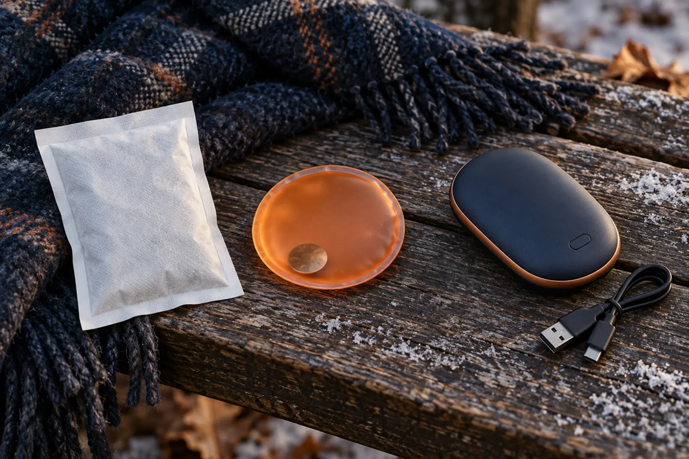

Air-activated packet
Simple, light and no battery. Oxygen starts the reaction after opening.
Tradeoff: single-use, hard to stop, contents may include iron.
COLD-WEATHER GEAR · SAFETY-FIRST BUYING GUIDE
Warm fingers are useful. A mystery heat source against a child’s skin is not. Start with gloves and movement, then choose the smallest backup heat system you can supervise and recall-check.

A hand warmer is backup heat, not the clothing system. Dry gloves or mittens, a warm core, food, hydration, movement and a shorter outing solve more problems than adding a hot object. If a child is cold, wet, confused, clumsy, unusually quiet or cannot warm up, end the outing and seek appropriate help. Do not use a warmer to extend a day beyond the family’s safe limit.
This guide compares categories; it is not a medical device recommendation or a product review. No unit was tested. Read the exact package and manufacturer instructions, comply with age limits, inspect before every use and keep an adult in control. People with reduced sensation, circulation concerns or medical conditions should ask a clinician before using localized heat.
Air-activated warmers commonly use iron oxidation to generate heat. The sealed packet must remain intact. Do not cut it open, place it in the mouth, let a child or pet play with it, or assume “natural ingredients” means safe to ingest. If contents are swallowed or get into the eyes, use the product instructions and contact Poison Help at 1-800-222-1222 in the United States for case-specific guidance. Do not make someone vomit unless professionals direct it.
These packets keep heating once activated and can create low-temperature burns during long contact. Follow the maker’s skin, pocket, glove, footwear and time limits. A packet intended for a shoe is not automatically a hand warmer. Check the skin regularly and remove it at the first discomfort, redness, numbness or unusual heat.
A reusable crystallization pouch can be useful for short waits because the adult chooses when to activate it. The exact ingredients, activation method, peak temperature, reset process and number of cycles are manufacturer-specific. Require intact seams, clear instructions and a reset method the household will actually follow.
Boiling-water reset belongs to an adult. Use the maker’s required barrier so a pouch does not contact a hot pan if instructed, let it cool fully, and discard it according to local guidance if the seal clouds, leaks, hardens incorrectly or shows damage. Never improvise a microwave reset unless the exact instructions explicitly permit it.
Rechargeable units add temperature settings and repeat use, but they also add a lithium-ion battery, charger and electronics. Before buying or using one, search the exact brand and model at CPSC Recalls. Record the model and batch while the markings are readable. Use only the charging method the manufacturer permits, keep charging on a stable nonflammable surface away from bedding, and stop using a unit that swells, smells unusual, leaks, cracks, becomes unexpectedly hot or behaves erratically.
CPSC recall 26-659 covers specified OCOOPA models and batches, not every rechargeable warmer. It reported 1,480 overheating incidents, 15 fires, 350 burn injuries and one death. Consumers were instructed to stop using recalled units immediately and pursue the refund remedy. CPSC also warns that defective lithium-ion devices do not belong in household trash, curbside recycling or ordinary retail battery boxes; contact the municipal household hazardous-waste program.
The approved Amazon links below are category searches, not tested picks. Search results can change and may include products that do not fit this protocol. Confirm the exact instructions, seller, model, current CPSC status and return terms before purchase. No rechargeable category link is provided while the large 2026 recall makes model-level diligence especially important.
Carry warmers in their original packaging or a labeled dry pouch. Keep air-activated packets sealed until needed. Store snap-disc pouches where edges cannot puncture them. Protect rechargeable controls from accidental activation and follow the maker’s temperature and transport limits. For flights, consult the FAA PackSafe battery rules and the airline; battery-powered devices do not belong wherever it is most convenient.
Pair the system with the kids’ glove fit guide, the fall layer system and the go, shorten or leave cutoff. On a cold outing, check hands at transitions: leaving the car, first snack, halfway point and before the return leg.
Skip them for children who cannot reliably report discomfort, will mouth or puncture the item, or will use it during sleep. Skip electric models if the household will not maintain the model record, recall check and charging discipline. Skip every category when dry mittens and a shorter plan solve the problem. If cold symptoms concern you, stop the outing and use medical or emergency guidance rather than adding heat and hoping.
MAKE THE DAY COUNT
Build the plan your family can finish well, then leave enough energy for the next part of the day.
More family plansTHE USEFUL STUFF
These are practical categories to compare—not a reason to overpack. Check fit, specifications and current reviews before buying.
Paid links: As an Amazon Associate I earn from qualifying purchases. You pay no additional cost.
Confirm the sealed packet's intended placement, age guidance, skin-contact limits, storage and disposal instructions; keep contents away from children and pets.
See current options → COMPARE ON AMAZONCompare pouch integrity, activation method, stated heat window and exact adult reset instructions; never improvise a microwave or boiling-water method.
See current options →